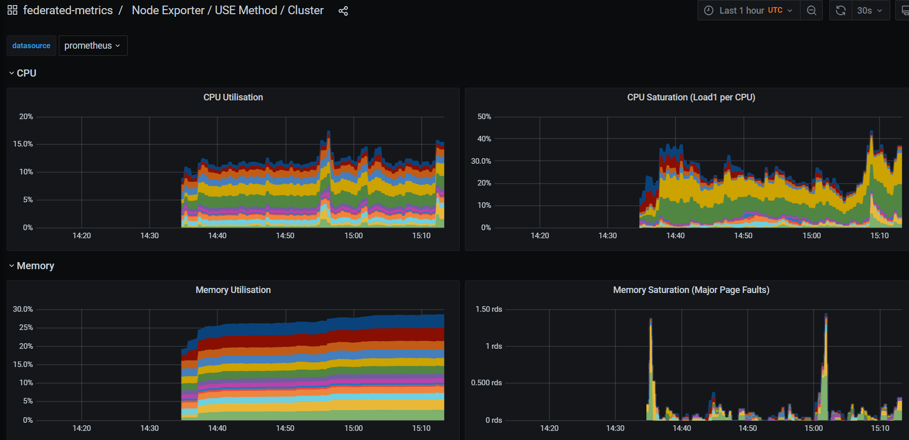

Federating Metrics to a centralized Prometheus Cluster
Red Hat Openshift for AWS (ROSA) comes with two built-in monitoring stacks. ClusterMonitoring and User Workload Monitoring. They are both based on Prometheus, the first targets the Cluster Operator (Red Hat SRE) and the latter targets the Cluster user (you!).
Both provide amazing metrics insights inside the Cluster's web console, showing overall cluster metrics as well as namespace specific workload metrics, all integrated with your configured IDP.
However the Alert Manager instance is locked down and used to send alerts to the Red Hat SRE team. This means that the customer cannot create alerts for either the cluster resources, or their own workloads. This is being worked on and future versions of ROSA will provide a way for the end user to create alerts for their own workloads.
Until that work is done, the ROSA cluster administrator can deploy a Prometheus instance and configure it to send alerts to themselves. Thankfully with Prometheus' federated metrics feature and the Prometheus Operator, this can be done in a few simple steps.
This guide is heavily influenced by Tommer Amber's guide for OCP 4.x.
Pre-requisites
-
Make sure the following pre-requisites are met:
- A Red Hat OpenShift for AWS (ROSA) cluster 4.8 or higher
Prepare Environment
- Set the following environment variables
bash
export NAMESPACE=federated-metrics
- Create the namespace
bash
oc new-project $NAMESPACE
- Add the MOBB chart repository to your Helm
bash
helm repo add mobb https://rh-mobb.github.io/helm-charts/
- Update your repositories
bash
helm repo update
- Use the
mobb/operatorhubchart to deploy the needed operators
bash
helm upgrade -n $NAMESPACE federated-metrics-operators \
mobb/operatorhub --version 0.1.1 --install \
--values https://raw.githubusercontent.com/rh-mobb/helm-charts/main/charts/rosa-federated-prometheus/files/operatorhub.yaml
- Wait until the two operators are running
bash
watch kubectl get pods -n $NAMESPACE
NAME READY STATUS RESTARTS AGE
grafana-operator-controller-manager-775f8d98c9-822h7 2/2 Running 0 7m33s
operatorhubio-dtb2v 1/1 Running 0 8m32s
prometheus-operator-5cb6844699-t7wfd 1/1 Running 0 7m29s
Deploy the monitoring stack
- Install the
mobb/rosa-federated-prometheusHelm Chart
bash
helm upgrade --install -n $NAMESPACE monitoring \
--set grafana-cr.basicAuthPassword='mypassword' \
--set fullnameOverride='monitoring' \
--version 0.5.3 \
mobb/rosa-federated-prometheus
Validate Prometheus
- Ensure the new Prometheus instance's Pods are running
bash
kubectl get pods -n ${NAMESPACE} -l app=prometheus -o wide
You should see the following:
bash
NAME READY STATUS RESTARTS AGE IP NODE NOMINATED NODE READINESS GATES
prometheus-federation-prometheus-0 3/3 Running 1 7m58s 10.131.0.104 ip-10-0-215-84.us-east-2.compute.internal <none> <none>
prometheus-federation-prometheus-1 3/3 Running 1 7m58s 10.128.2.21 ip-10-0-146-85.us-east-2.compute.internal <none> <none>
-
Log into the new Prometheus instance
Fetch the Route:
bash
kubectl -n ${NAMESPACE} get route prometheus-route
You should see the following:
bash
NAME HOST/PORT PATH SERVICES PORT TERMINATION WILDCARD
prometheus-route prometheus-route-custom-prometheus.apps.mycluster.jnmf.p1.openshiftapps.com monitoring-prometheus-cr web-proxy reencrypt None
Open the Prometheus Route in your browser (the HOST/PATH field from above)
It should take you through authorization and then you should see the Prometheus UI.
- add
/targetsto the end of the URL to see the list of available targets

- Switch out the trailing path to be
graph?g0.range_input=1h&g0.expr=kubelet_running_containers&g0.tab=0to see the graph of the number of running containers fetched from cluster monitoring.

- click on Alerts in the menu to see our example Alert
Validate Alert Manager
- forward a port to Alert Manager
bash
kubectl -n ${NAMESPACE} port-forward svc/monitoring-alertmanager-cr 9093:9093
- Browse to http://localhost:9093/#/alerts to see the alert "ExampleAlert"

Validate Grafana and Dashboards
- Find the Grafana Route
bash
kubectl get route grafana-route
bash
NAME HOST/PORT PATH SERVICES PORT TERMINATION WILDCARD
grafana-route grafana-route-federated-metrics.apps.metrics.9l1z.p1.openshiftapps.com / grafana-service grafana-proxy reencrypt None
-
Log into grafana using your cluster's idp
-
Click login and login to Grafana as
adminwith the password you set when doinghelm install. -
Click on Configuration -> Datasources and check that the prometheus data source is loaded.
Sometimes due to Kubernetes resource ordering the Data Source may not be loaded. We can force the Operator to reload it by running kubectl annotate -n $NAMESPACE grafanadatasources.integreatly.org federated reroll=true
- Click on Dashboards -> Manage and click on the "Use Method / Cluster" dashboard.

Cleanup
- Delete the helm release
bash
helm -n $NAMESPACE delete monitoring
- Delete the namespace
bash
kubectl delete namespace $NAMESPACE